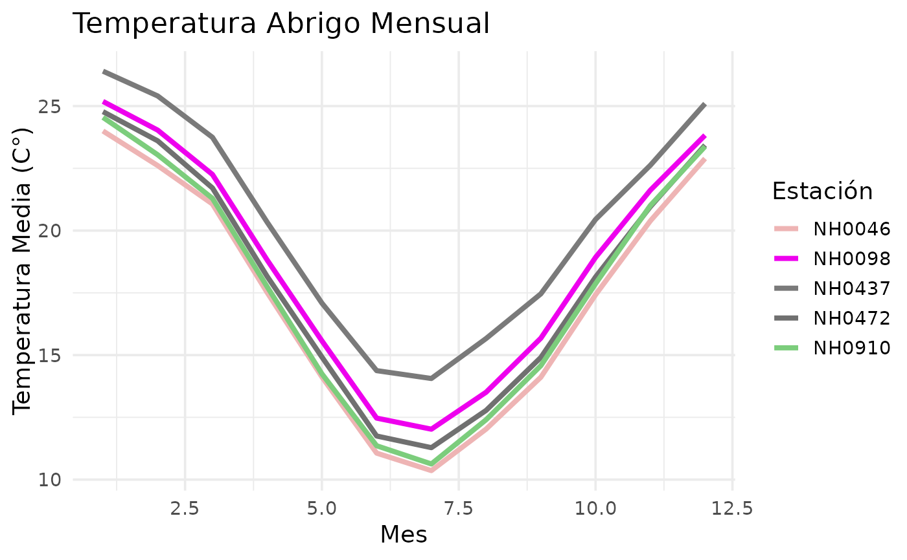

Genera un grafico de serie de tiempo que muestra la temperatura abrigo de cada estacion
Examples
dataset <- NimbusR::centros_df
plot_temperatura_abrigo(dataset)

plot_temperatura_abrigo(dataset, titulo = "Temperatura Abrigo Mensual")

plot_temperatura_abrigo(df,c("red", "blue", "black","pink", "lightblue"), titulo = "Temperatura Abrigo Mensual")
#> Error in plot_temperatura_abrigo(df, c("red", "blue", "black", "pink", "lightblue"), titulo = "Temperatura Abrigo Mensual"): El argumento 'dataset' debe ser un data frame.